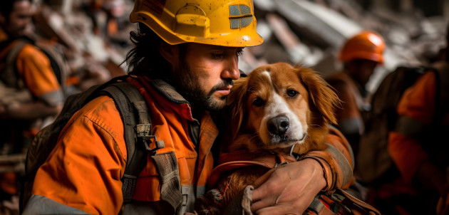

Faaliyetlerini sadece karlılık üzerine kurmayan şirketimiz, insanlığa borçlu olduğu sosyal sorumluluk projelerini özenle yerine getirmektedir.
Pandemi sebebiyle uzaktan eğitime erişimi olmayan öğrenciler için bilgisayar alarak eğitime destek olunması,
Okul inşaat ve tadilat projelerine destek olunması,
Deprem ve diğer afet bölgelerine çeşitli eğitim desteklerinde bulunulması,
İhtiyacı olan öğrencilere burs vermek gibi alanlarda topluma katkı sağlanması.
Sokak hayvanlarının sahiplenilmesi için bilinçlendirme çalışmaları yapıyoruz.
Barınma ihtiyaçlarına destek sağlayarak, güvenli alanlar oluşturulmasına katkı sağlıyoruz.
Mama desteği sunarak, aç kalan sokak hayvanlarının beslenmesine yardımcı oluyoruz.
Veteriner hekim tedavi desteği vererek, sağlık sorunlarını çözmeye yönelik adımlar atıyoruz.
Amacımız, sokak hayvanlarının daha iyi bir yaşam sürmelerine yardımcı olmak ve onları koruyarak toplumda duyarlı bir bilinç oluşturmak.
